确定的走势：顶部和底部的形状
- 如果下跌的时候，出现了走平，那么这个常常不是底部。走平应该看作是拖延时间，
把时间加长，显得整体比较慢。它可能冲高后填补真空大跌。或者直接下跌
- 如果下跌的时候，立刻反弹，那么要看反弹的幅度和速度。它可能是一个双底，但也可能是填补真空后，大跌
- 一个上涨走势出现了相对论加速，比如在走平的时候，出现了上涨速度高于下跌速度，那么就要下跌了。
另外也有下跌的理由，理由有两种，一个是叠加走势，就是上涨后，没有回调，走平再次上涨，还有一种是两段走势。
这两个情况一定会都出现，然后大盘反转了。另外就是第二段的速度比较快，不能是非常的缓慢，如果是非常的缓慢，
那么不会反转。
快速下跌后，底部形状
复杂的底部和顶部形状
顶部下跌很快，但是依靠相对运动建立顶部
走势走平的时候，依赖相对运动来建立转折点
第一个头部下跌很快，反弹后，第二个头部下跌很慢
一开始就下跌很快，然后反弹，不到前面高点，再次下跌
两段或三段下跌后，底部出现较大的反弹，
却没有超过前面快速下跌的点
复杂的底部和顶部形状
TOP

图示:3397是高点，它和前面的3392的相对高点相比是，走平的。说明这个确实是一个头部。
它的下跌非常的艰难，下跌后，又拉回到了3390.然后才大跌。
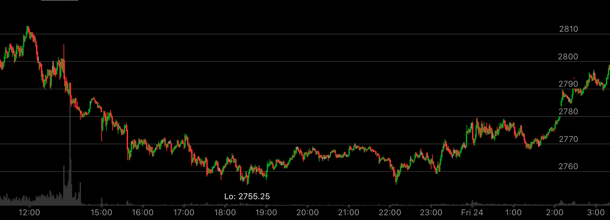
图示:大盘处于升势，这一个大幅回调的走势。18：30它创新低后，立刻反弹，然后在高处停留很久。22：00快速下跌。
形成了双底。要看到，它没有创新低，和原来的低点一样。然后立刻反弹。这个和平时的在低处很久的模式不一样。然而也是一个底部。后来它就一路反弹了。
说明底部不一定会停留很久。
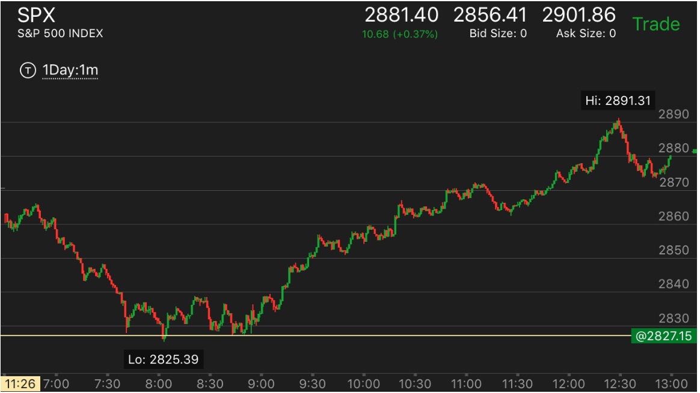
图示：
1.6:50开始的下跌，速度很快。7：10算是一个走平，然后出现了第二段下跌。8：05出现了加速下跌。
2. 大盘在底部一个多小时，说明非常的结实。
3. 8：50开始上涨，非常的缓慢，它不断的走平，拉回。
4. 11：10开始大幅拉回，走平，然后大涨。
两段或三段下跌后，底部出现较大的反弹，却没有超过前面快速下跌的点
TOP

图示:开盘出现了两段下跌，6：40和6：50，两个底部。6：50更加平，显得很弱。这样就是一个底部了。
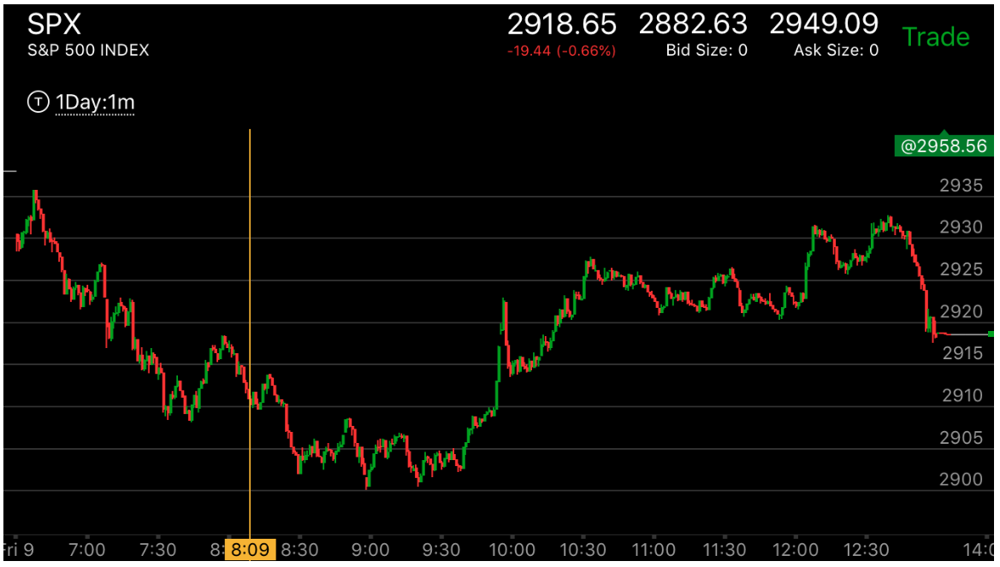
图示:8：30出现了两段下跌走势，8：30反弹，却没有越过2910这个走平点，这个和前面7：40的反弹不同，
7：40的反弹越过了2915这个走平点。形成了向上加速。它不但没有越过，反而再次走低，创新低，这样形成了向下加速。
再次反弹后，幅度更小，9：20到9：40在底部小幅震荡。形成了坚实的底部，能量没有浪费。这样就是底部了。
一开始就下跌很快，然后反弹，不到前面高点，再次下跌
TOP
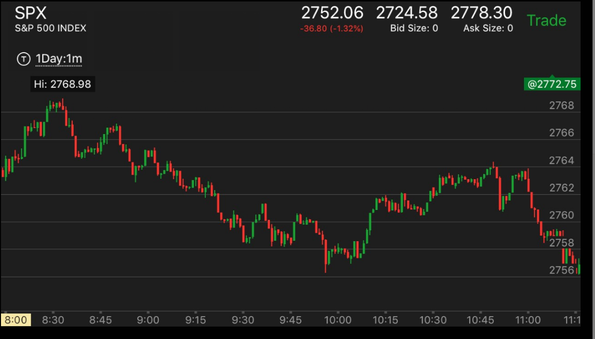
图示:
8：35的头部，它很快从高点下跌，速度很快。甚至超过了上涨速度，似乎不是一个
正常的下跌。结果它开始走平，然后上涨。似乎要继续大涨。或者似乎要回到原来高点。结果没有，
它不到高点，开始走平。似乎是一个缓慢上涨的走势。这个只能从大势分析。如果光是看小走势，这个确实会上涨。
所以必须看大走势，然后做空的时候，紧紧拿住。
10：48快速从高点下跌，然后立刻反弹，几乎回到原位。但是不到原位。然后走平，再次下跌。
第一个头部下跌很快，反弹后，第二个头部下跌很慢
TOP
这个走势关键在于第二个顶部的位置，它要超过第一个顶部，如果低于，那么就是填补真空。这两者后果不同。
如果填补真空，那么这个的速度没有意义，就是跌。如果超过第一个顶部，那么它的相对速度则决定了它是否是真的头部还是未来还会继续上涨。
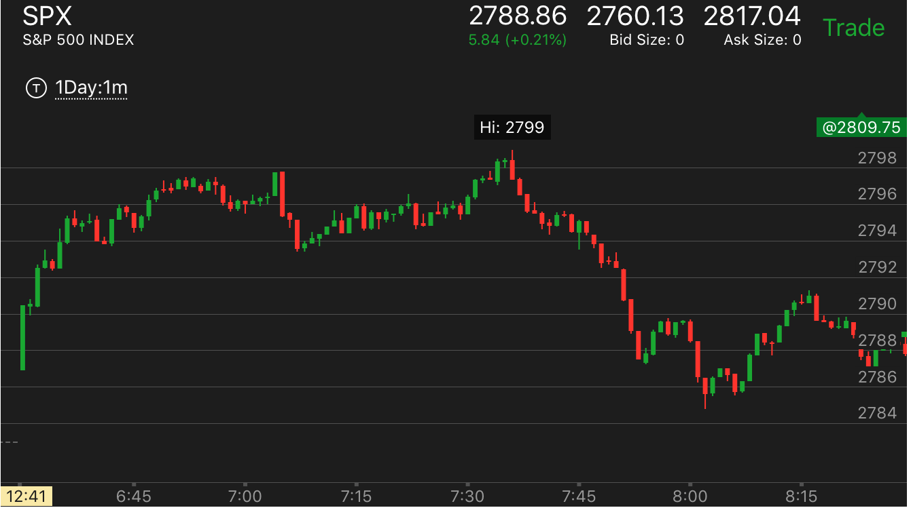
图示:7:05出现了加速上涨后，快速下跌。这个就不是底部。一定会上涨的。但是这时已经处于跌势了。
7：35.它回到原位后，稍微超过前面的高点，开始缓慢下跌。用相对论分析。它一定会低于前面快速下跌的低点.它在低点前还走平。这样更加说明它会大跌了。
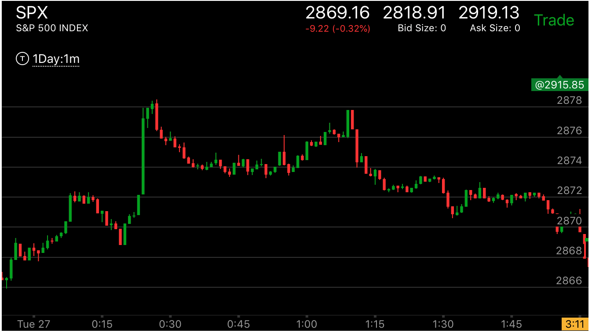
图示:0：20反弹后，快速下跌，1：10反弹后，再次快速下跌。可以看到，它的高点不到前面高点。这样就是填补真空。
因为前面跌的太快了。而它在1：10下跌速度很快，超过前面的顶点速度。这个不代表这个不是顶点，而是真实下跌它的下跌速度没有意义。
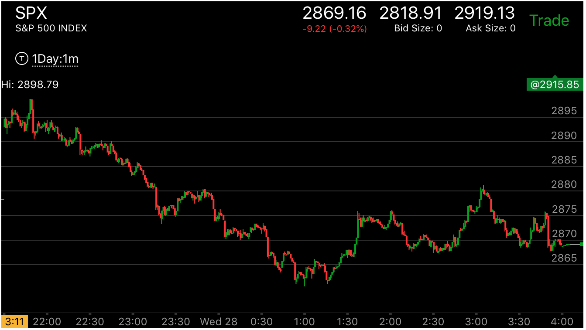
图示:1：20反弹，到1：40出现了一个两段上涨走势，似乎应该大跌。但是它在2：00出现了第二个顶点，这个顶点的位置超过了前面的顶点。
它的下跌速度远远高于前面顶点下跌速度。这个说明它未来会超过前面的顶点。这个不是顶部。
还有几个原因可以认定，这个不是这次反弹的高点。
1. 23：40是快速下跌的开始，这个真空一直没有被填补，2880这个点一定要被填补。
2. 2868是快速上涨的开始，它下跌到了这个地方就停止了。这个是填补真空，不是真实下跌。
3. 从2876下跌的时候，出现了下跌走平，再次快速下跌的走势。这个是要反转的。它反弹后，从2：20开始下跌的时候，出现了两次加速下跌。这样也构成了反弹的动力。
走势走平的时候，依赖相对运动来建立转折点
TOP
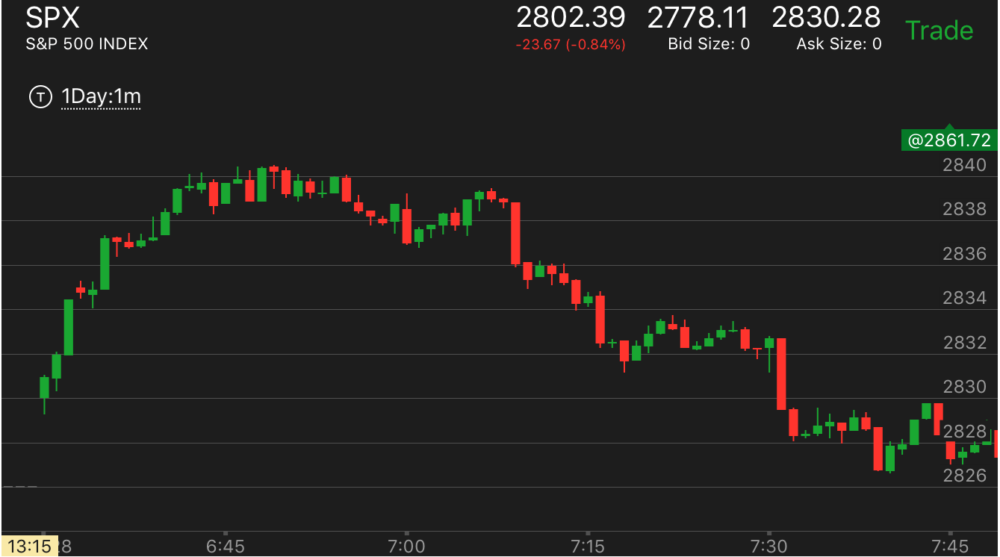
图示:开盘后不断上涨。然后走平，再次上涨。这个就具备了下跌的动力。
它在走平的时候，6：46.出现了上涨速度超过下跌的速度。这个就表示要跌了。而它下跌的情况则代表了它要大跌还是小跌。
这个情况下，它下跌速度很慢，远远低于上涨速度。说明要大跌。
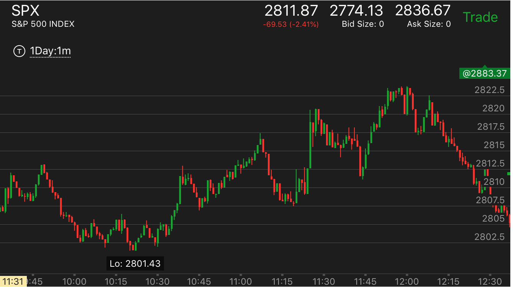
图示:10：20附近，它的反弹很大，而下跌速度很快，说明要涨了。而且它反弹的时候，用了很久才走出了
2805这个下跌的开始点。
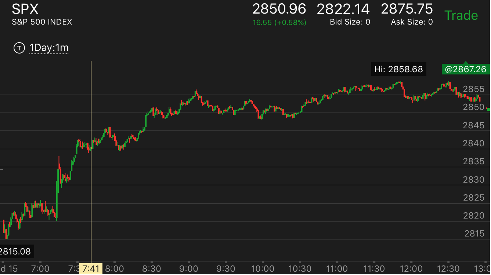
图示:大盘一直处于升势，11：20大盘在走平的时候，出现了缓慢下跌后，快速上涨的走势。这个是走平的时候发生的。
说明大盘要反转了。但是这个走势，大盘并没有立刻走低，而是冲高一下后，大幅快速走低。它因为走低的速度太快了。所以再次回来。
回到高点后，开始不断的转折走低。最后大跌。用这种方法反转，只能产生比较小的反转。不能全面反转。
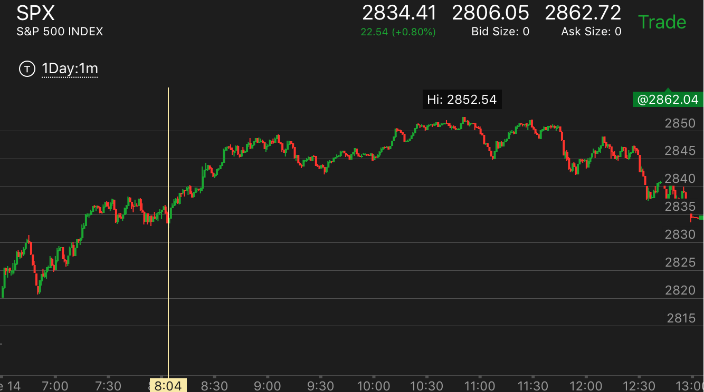
图示：10:50大盘在走平的时候，快速冲高，创新高。它的上涨速度超过下跌速度。这一个就是顶部了。
同样，这样的反转只能部分反转一个走势。无法全面反转。
快速下跌后，底部形状
TOP
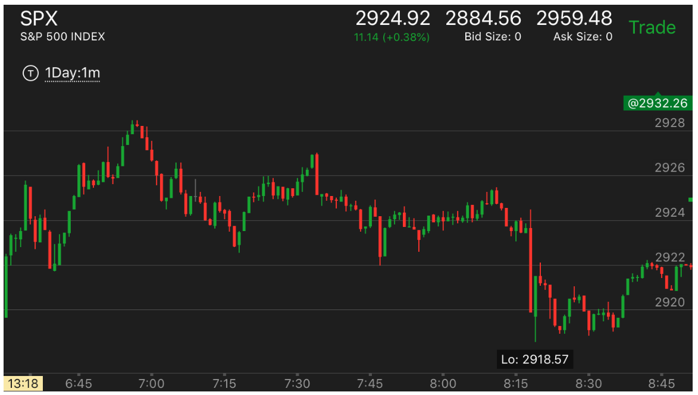
图示:8:15快速下跌，立刻反弹很大，然后下来。似乎不是一个底部。
但是比较它的第一浪，快速下跌超过了第一浪。第一浪发生在6：58.而且它下跌反弹后，很快就下来。
基本都在底部运动。所以这个底部还是坐实了。而且反弹的速度虽然快，仍然低于下跌的速度。
从相对论分析，它也应该超过高点才对。它没有立刻超过高点，而是主要在低点运动。这样没有浪费能量。
未来走势反转，开始上涨了。
顶部下跌很快，但是依靠相对运动建立顶部
TOP
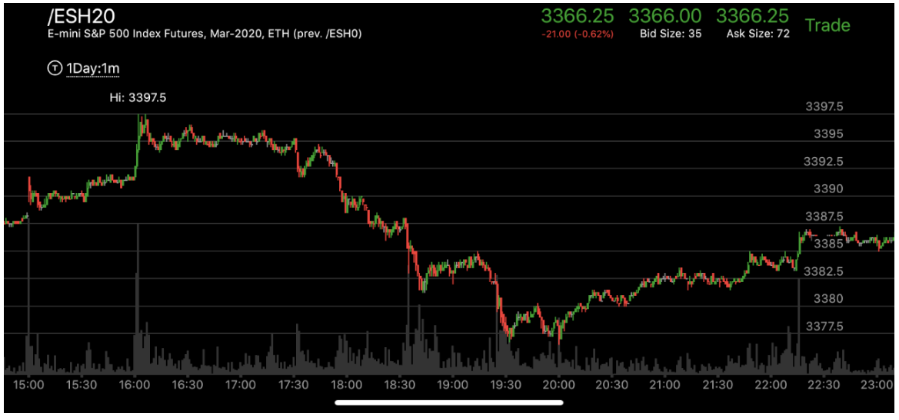
图示：15：00冲高后，创新高，立刻拉回，16：00再次冲高，幅度和速度更大，
然而没有立刻拉回，而是拉回一部分后，在高点震荡几个小时后，才大跌。

图示：7:20冲高速度很快，比下跌速度更快。这样就已经表示会下跌了。
7：30出现了冲高后没有回调，继续冲高的走势。7：31冲高，然后下来一点，走平。这样它的速度远远低于
上涨的速度。这个就是顶部了。

图示：8：05它开始反弹，加速冲高，出现新高。
下跌的速度很慢。这样就是一个顶部的走势了。

图示：
1. 11：00出现加速大涨后，快速回调，回调幅度很大。这个说明会继续涨
应该做多。它继续大涨，创新高后，开始缓慢下跌。这个要做对比。要想到这个是市场让你看到它的情况。
2. 它第二个山峰回调速度明显低于前面。
而且只回调了2个点后，在11：10开始走平震荡。和前面一下回调4个点相比，显得很强。然而这个反而是要大跌的样子。我会被诱惑在这个地方做多，因为根据前面的经验。
它会继续大涨。结果暴跌。同时这两个连续新高，间隔时间很短。其实是一种加速走势，形成跌势。
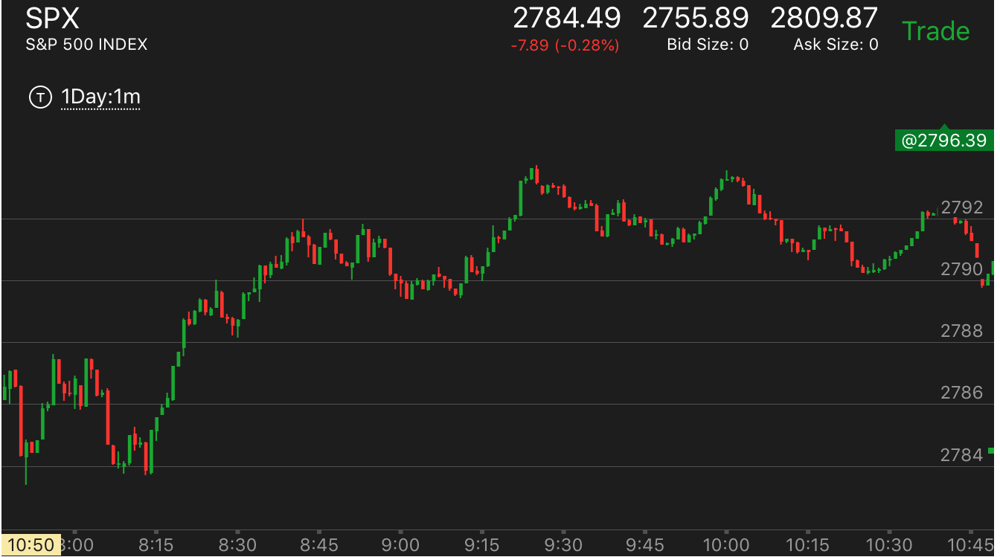
图示：9：25冲高后，下跌速度很慢。但是它下跌的时候，出现了三段下跌。
这样就是一个底部。9:45出现了反弹。但它反弹的速度超过下跌。所以没有反弹超过高点，就开始继续下跌。

图示：9：50快速冲高，它在经过长期上涨后，这样是一个加速上涨，关键是它是否是最后一击。还是说还有更高。
它在顶部出现走平。开始下跌的时候，非常缓慢，一分钟才跌了1个点。而且刚刚下跌很少，就在阻力点2588反弹让前面如果在2588做空的人很着急。因为它是一下冲上来的。
如果有人在前面高点做空，会被套牢。这时更加着急。因为它稍微回调就开始似乎大涨了。会让这些人割肉。然后大跌。

图示： 11:30达到顶部后，下跌速度很慢。所以会跌。11：40快速下跌。
它反弹。由于处于跌势，它超过了下跌点就开始大跌了。12：20下跌的时候，分成两段。这样显得比较慢。会大跌。

图示：从8：40开始，它一路上涨，中间只有走平，但是没有回调，可见一个主要走势，不能
去做它的回调来赚钱，而是要紧紧拿住。到了9：15.它走平后上涨，出现两个峰，一个峰，立刻回调比较大，
第二个峰更高，回调很小。属于加速。这样到了顶点。
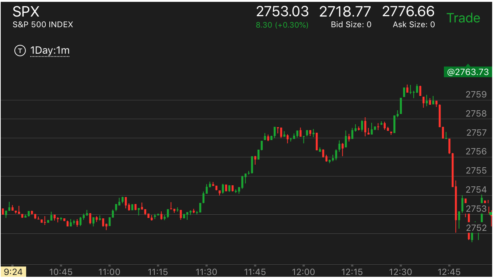
图示：经过长时间缓慢上涨后，它在11：45 大幅冲高，没有明显的回调，12：10的回调也很小。不够回调的样子。
这个似乎是长时间的缓慢上涨的加速。但是它的头部还是形状不对。12：30再次冲高，走平，然后稍微走低一点，再次走平。这样就是典型的跌势了。这个必然大跌。
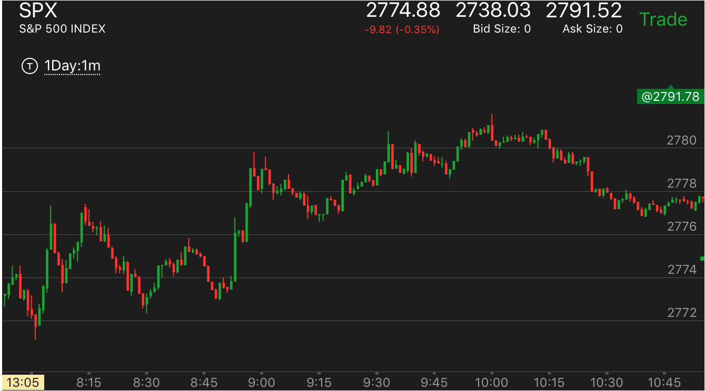
图示：不断走高。到了9：45它冲高后，速度超过了下跌速度。
而9：50下跌的开始速度很快。但是只有一浪，就开始长时间走平了。这样平均来看，下跌就很慢。
这样就是要跌。